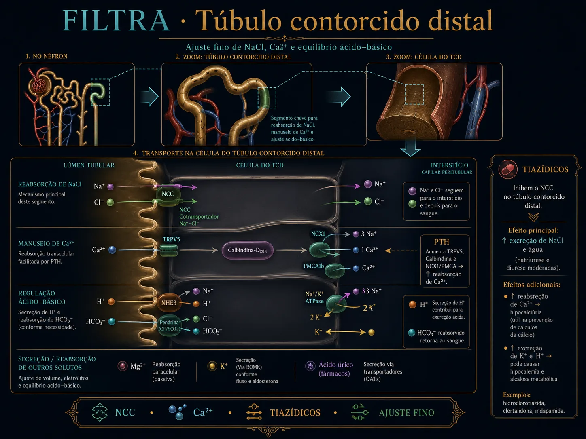
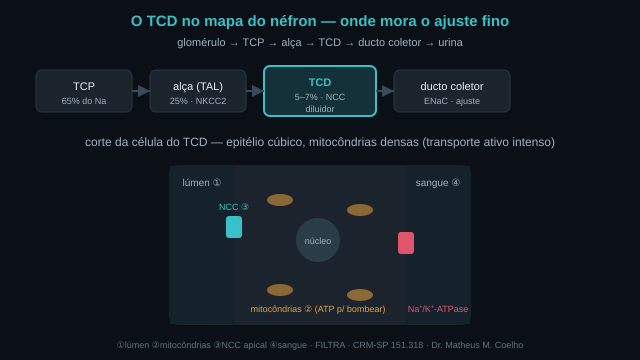
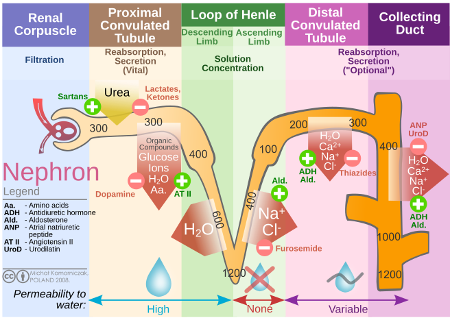
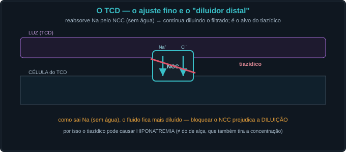
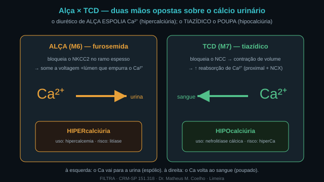
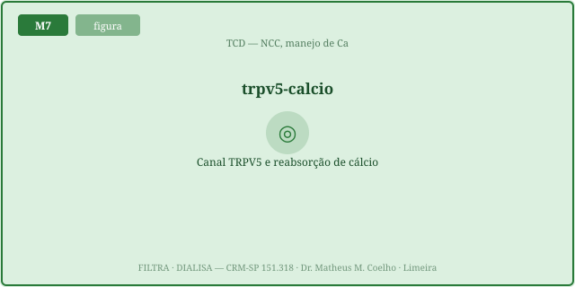
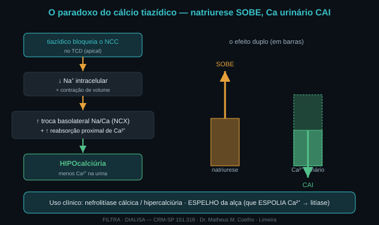

Conceito — o TCD e o tiazídico, ilustrado
O TCD é o ajuste fino da homeostasia. Depois que a alça criou o
gradiente (M6), o TCD pega os últimos ~5–7% do Na⁺ pelo NCC — sem deixar a água passar — e regula o
Ca²⁺. As Fig. 1–11 voltam no Caso, na Trilha e na Avaliação. Atribuição em CREDITS.md (em curadoria).

1. Onde fica o TCD — e por que é diferente
O TCD vem depois da alça e antes do ducto coletor. Tem epitélio cúbico cheio de mitocôndrias: é um segmento de transporte ativo intenso e de ajuste fino — não é "mais do mesmo".


2. O NCC e o segmento diluidor distal
O NCC (cotransportador Na⁺-Cl⁻) reabsorve soluto, mas a parede é impermeável à água: tira sal sem tirar água → a urina fica ainda mais diluída. Bloquear o NCC = perder o diluidor.


3. A balança Na↔K — por que o tiazídico dá hipocalemia
Bloquear o NCC manda mais Na⁺ ao ducto coletor; lá o ENaC (M8) o reabsorve e a luz negativa secreta K⁺ → hipocalemia. O mesmo raciocínio do M6, agora no distal.

4. O manejo do cálcio — TRPV5, calbindina e o PTH
O TCD reabsorve Ca²⁺ ativamente: entra pelo TRPV5 apical, é carregado pela calbindina e sai pelo NCX/PMCA basolateral. O PTH estimula essa via.


5. Os tiazídicos — dose-resposta, TFG e a exceção
A dose-resposta é uma curva Emax com teto (computada no Lab). A eficácia cai com TFG <30 (exceto clortalidona/metolazona). E a síndrome de Gitelman é o NCC quebrado de nascença — um "tiazídico endógeno".
Caso — oito atos, decida antes de revelar
Homem de 58 anos, HAS e nefrolitíase cálcica de repetição; vamos escolher o diurético pelo mecanismo.
Trilha socrática — treze perguntas que constroem o conceito
1. Onde fica o TCD e quanto Na ele reabsorve?
Depois da alça, antes do ducto coletor; reabsorve ~5–7% do Na⁺ filtrado — pouco em massa, decisivo no ajuste fino.
2. Qual o transportador apical do TCD?
O NCC (cotransportador Na⁺-Cl⁻), alvo único dos tiazídicos.
3. Por que o TCD é o "segmento diluidor distal"?
Reabsorve NaCl mas é impermeável à água: tira soluto sem água → dilui ainda mais a urina.
4. O que acontece se bloquearmos o NCC?
Natriurese modesta (teto baixo, < alça), perda do diluidor distal e mais Na entregue ao ducto coletor.
5. Por que o tiazídico causa hipocalemia?
Mais Na ao ducto coletor → o ENaC reabsorve → a luz negativa secreta K⁺ (a balança Na↔K do M8).
6. Por que o tiazídico causa hiponatremia?
Bloqueia o segmento diluidor (perde água livre) e a contração de volume estimula o ADH — a hiponatremia clássica.
7. Como o TCD reabsorve cálcio?
Via transcelular: TRPV5 (apical) → calbindina → NCX/PMCA (basolateral). O PTH estimula essa via.
8. Qual é o paradoxo do cálcio tiazídico?
O tiazídico faz MAIS natriurese e, ao mesmo tempo, MENOS cálcio na urina (hipocalciúria) — por contração de volume e ↑reabsorção proximal/NCX.
9. Por isso, o tiazídico serve para qual problema?
Nefrolitíase cálcica / hipercalciúria — reduz o Ca urinário. É o oposto da alça, que espolia Ca.
10. Alça × tiazídico no cálcio: a regra?
Alça (NKCC2) = hipercalciúria (trata hipercalcemia); tiazídico (NCC) = hipocalciúria (trata litíase).
11. O tiazídico funciona com TFG baixa?
Perde eficácia com TFG <30 — exceto clortalidona (t½ longa) e metolazona, que ainda agem.
12. O que é a síndrome de Gitelman?
Perda de função do NCC = "tiazídico endógeno": hipoK, alcalose metabólica, hipoMg e HIPOcalciúria.
13. Gitelman × Bartter — como separar?
Pelo cálcio urinário: Gitelman (NCC) = hipocalciúria; Bartter (NKCC2, alça) = hipercalciúria. O cálcio é o desempate.
Instrumento — o paradoxo em duas curvas (FENa × Ca urinário)
Os controles do Lab alimentam estas curvas, ambas em função do bloqueio do NCC. A natriurese (azul) SOBE; o Ca urinário (verde) CAI. O marcador laranja é o ponto de operação — a prova viva do paradoxo.
Laboratório — o NCC, o tiazídico e o paradoxo (dose computada)
| Variável | Atual | Comentário |
|---|---|---|
| Atividade do NCC | — | 1 = normal |
| FENa (natriurese, %) | — | teto baixo (< alça) |
| K⁺ plasmático (mmol/L) | — | 3,5–5,0 |
| Ca²⁺ urinário (rel.) | — | <0,75 = hipocalciúria |
| Clearance de água livre (mL/min) | — | cai = risco hipoNa |
| Mg²⁺ urinário (rel.) | — | >1,6 = hipoMg |
| Padrão | — | — |